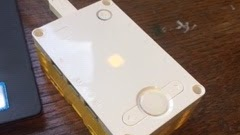
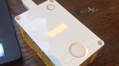

Morse Code Decoder
During the summer of 2020 I worked at the Tufts Center for Engineering Education and Outreach (CEEO), where I was placed on the AI team with the goal of creating projects for the LEGO SPIKE Prime that incorporated AI algorithms. My first project was a Morse code decoder.
The decoder uses the k-nearest neighbor algorithm to categorize button presses of different lengths as either dots or dashes. By recognizing the timing intervals between presses, the program can translate a sequence of Morse code input into its component English letters, words, and sentences.


Left: a short press, classified as a dot. Right: a long press, classified as a dash.
To see the Morse Code Decoder in action please check out the video below: